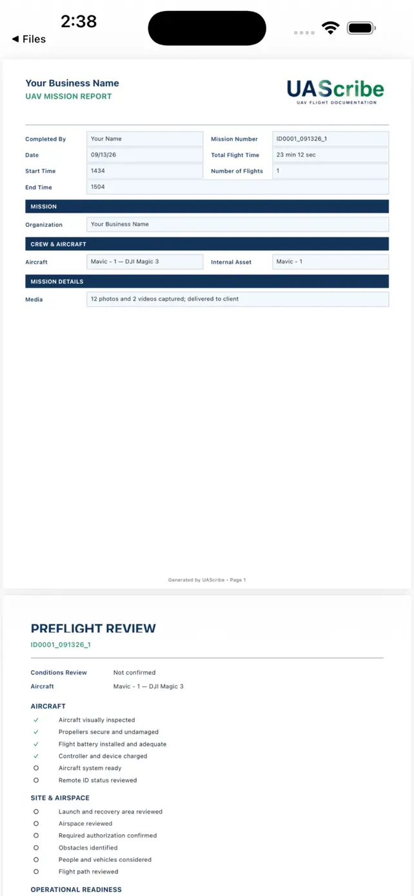
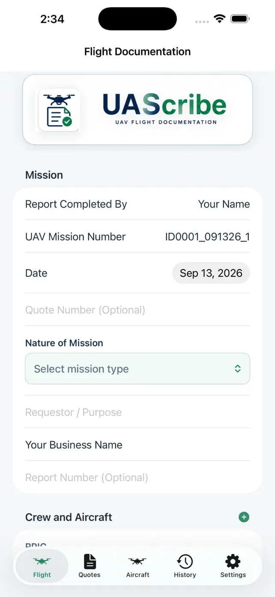
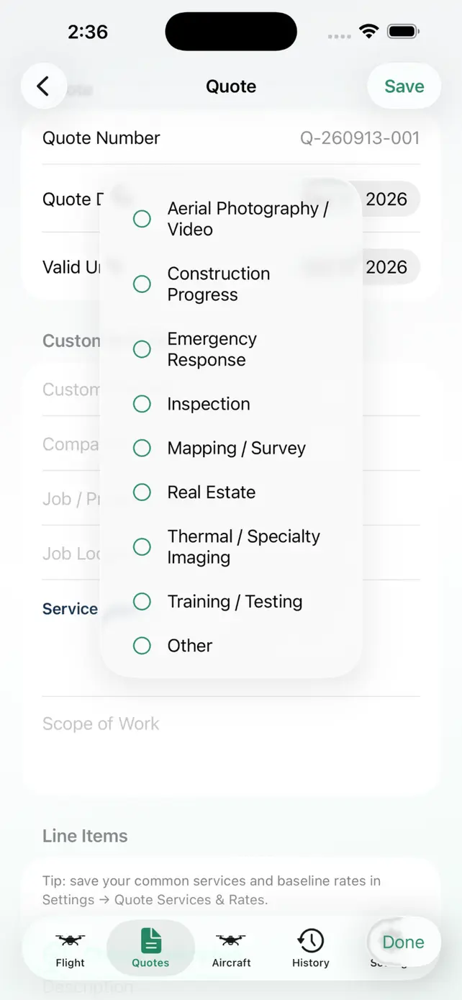

Private
No account to create. Saved business and flight records stay on your device, with no developer-operated cloud database receiving them.
DRONE FLIGHT LOG APP FOR IPHONE & IPAD
Without the monthly subscription.

Quote the job, document the flight, and share or print a branded PDF. A practical drone logbook for iPhone and iPad.
Try 3 reports for free.Then $29.99 once for unlimited reports.
US App Store price · Regional pricing may differ

On a computer?
Scan with your iPhone.
Built by a USMC veteran and active first responder.
For commercial pilots and public safety teams.
ONE CONNECTED WORKFLOW
Keep the business side and the flight record together, from the customer’s request to the completed mission report.
Build a clear customer quote with reusable services and saved pricing.
Explore quotes →02 / DOCUMENTRecord the mission, aircraft, pilot, crew, conditions, preflight, and flight details.
Explore flight reports →03 / DELIVERCreate a branded PDF to save, share, or print. Include the linked quote when the job calls for it.
See PDF reporting →BUILT FOR THE FIELD
UAScribe supports documentation. Weather and airspace lookups are informational and do not grant authorization or replace the pilot’s responsibilities.


WHY UASCRIBE
No account to create. Saved business and flight records stay on your device, with no developer-operated cloud database receiving them.
Your organization name and logo on a completed PDF you choose to save, share, or print.
A permanent Pro unlock gives you unlimited mission reports after the free trial.
Requested location, weather, and airspace lookups use online services. Device backups and your chosen sharing destinations have their own privacy practices. Read the privacy policy.
COMMON QUESTIONS
No. UAScribe documents flights and creates quotes and reports. It does not control your aircraft or grant airspace authorization.
Yes. Save, share, or print the completed PDF through the iOS share sheet. Printing requires a compatible printer.
Yes. The app supports iPhone and iPad, including landscape layouts on iPad.
Saved records are local to the device where you create them. Do not rely on automatic iPhone-to-iPad synchronization. Save important report PDFs where you can access them later.
Try three completed mission reports before purchasing the permanent unlock. Canceling the share sheet does not use a trial report, and sharing an unchanged completed report again does not count it twice.
FROM FIRST QUOTE TO FINAL REPORT
Try 3 reports for free.Then $29.99 once for unlimited mission reports.
US App Store price · Regional pricing may differ